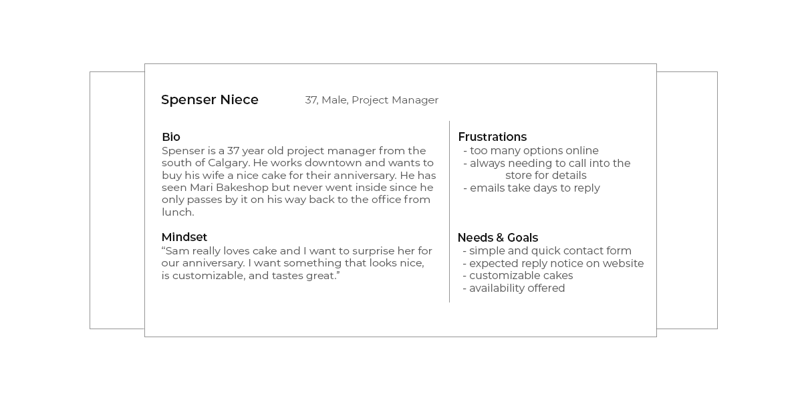
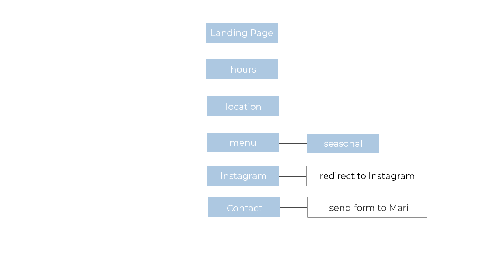
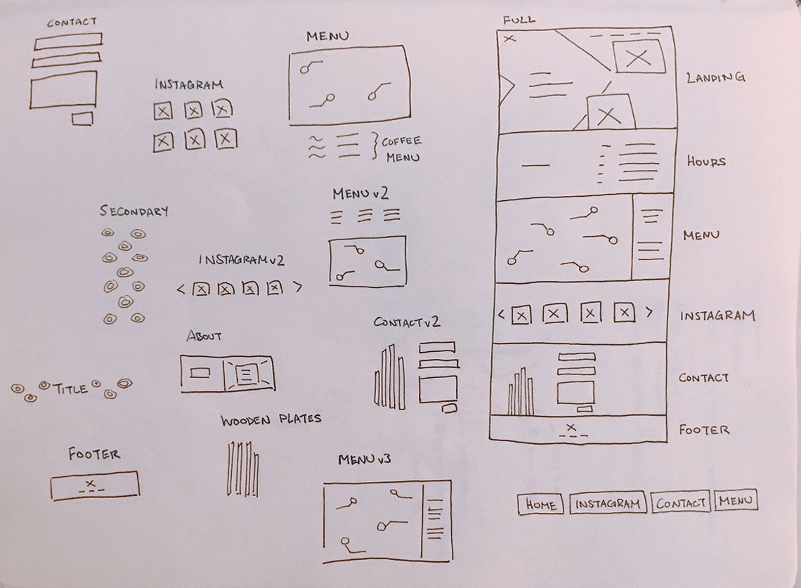
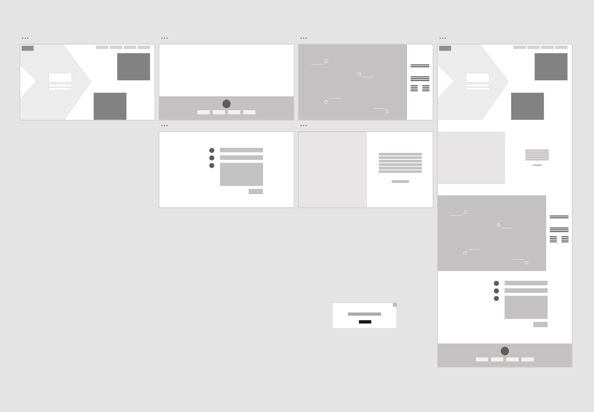
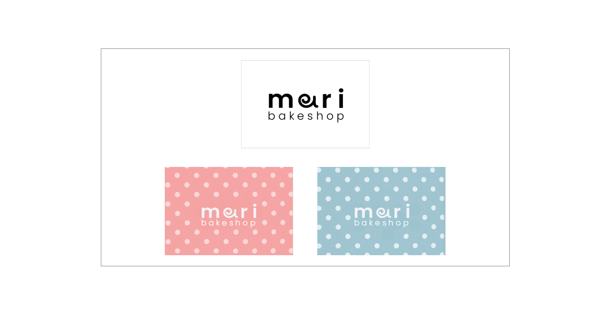

software developer & ui / ux designer in calgary, ab, canada


Located in Calgary, Mari Bakeshop specializes in roll cakes and choux pastries inspired from Asian and French origins. With it’s ideal location by the River in Calgary’s East Village, Mari Bakeshop aims to share their beautifully created and tasty pastries to customers at any time of day.
With the current implementation of the website, users are directed to Mari’s official Instagram boasting a following of over three thousand followers. While the Instagram profile does offer hours and location, apps like Yelp! or Zomato only links to websites and therefore, users are two interactions away from finding out information about Mari. So in resolving this issue, implementing a simple website with store information and highlighting the Instagram page would be ideal.
My role is to design a website from the ground up, taking a detailed approach to creating a minimalist solution with consideration to the production requirements, guidelines, the UX, UI, IXD, and branding.
As part of the research phase, I will create a high level overview of the target audience. The user goals and pain points will help us gain a better understanding of the problem.
Based on the persona insights, I will start to break down and map out user needs and goals by turning them into stories. This will help define the scope of the website as well as the requirements and features

The blue boxes indicate the main user task flow.
When working on a website, it’s important to remember that things must be responsive. Set up breakpoints for how the website will look on different devices to reach a larger audience
For designing with responsiveness in mind, I consider the breakpoints to clearly define layout constraints.

After gaining a better understanding of what is needed on the website, I will draw numerous UI components to capture what is required following the user task flow. This will be helpful when generating ideas for the layout and overall feel of the website
Based on my initial sketches, I created a set of mid-fidelity wireframes using Adobe XD to map out the bare-bones of the website. Doing this helped me identify reusable patterns and see the overall look of the website
Part of the vision includes creating a modern, friendly, and cute brand. Mari Bakeshop has already used Poppins and Open sans. Mari’s interior uses many neutral tones which is beautifully modern and simple. To add a friendly and cute feel that matches their pastries and packaging, I paired those neutral tones with blue and pink that would compliment Mari Bakeshop's packaging and interior.
Textually, the logo incorporates a roll cake into the ‘a’ with Poppins font. The logo will be mainly in white or dark grey so that it would stand out on blue or pink packaging.

One step away from the product, this is a high fidelity prototype of the website for mobile and desktop views.
Possible implementations for Phase II